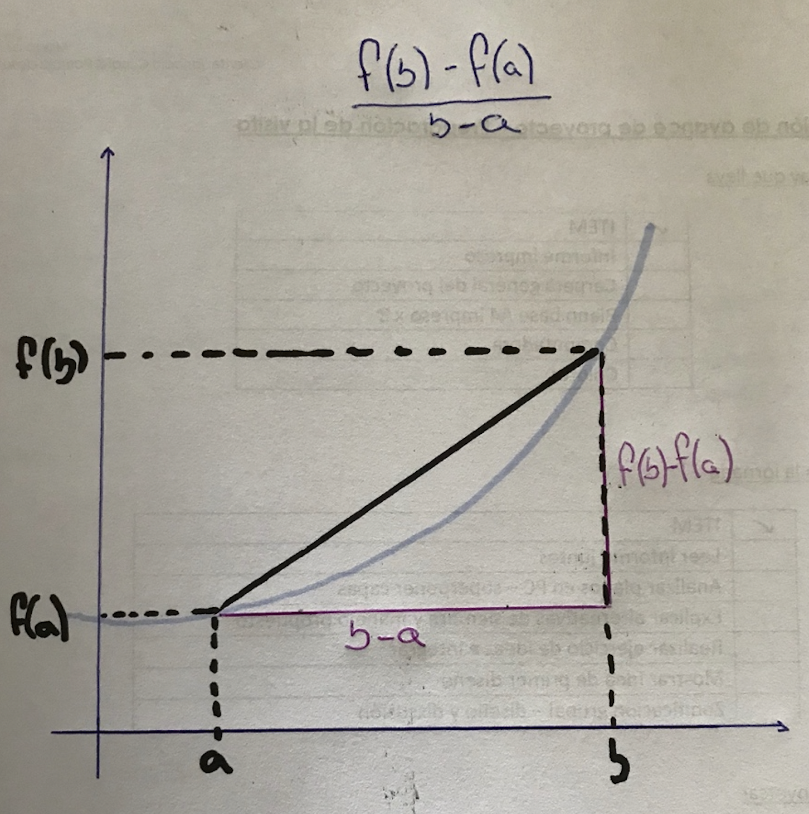
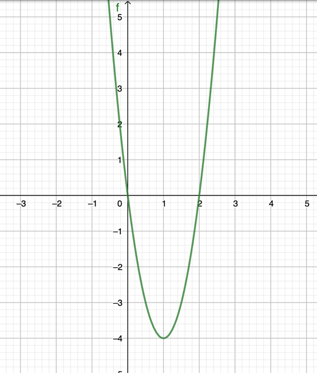
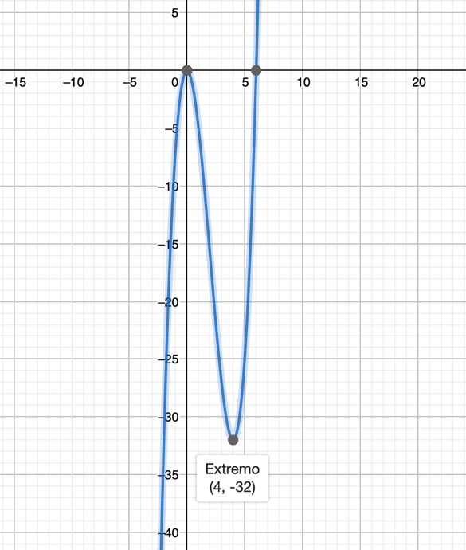
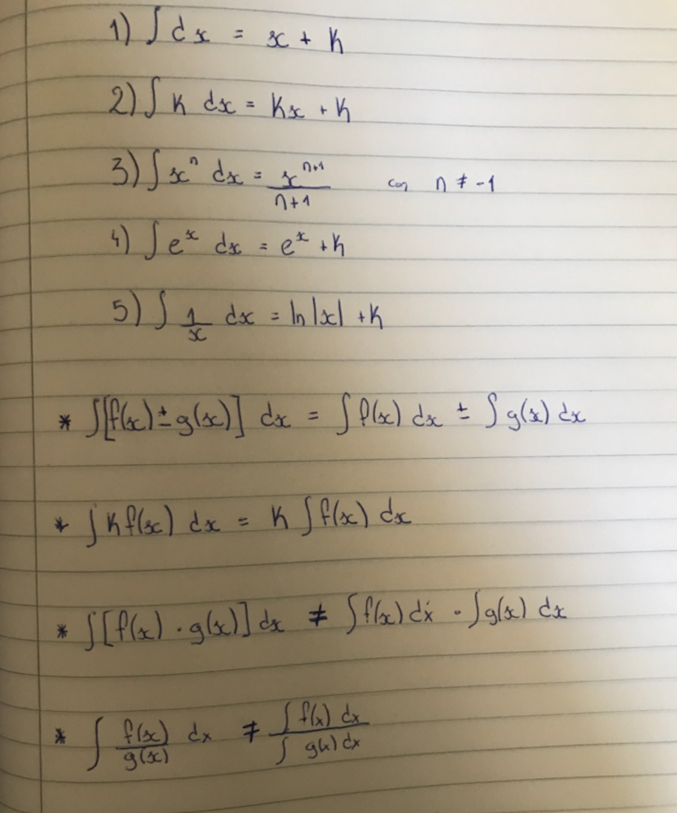
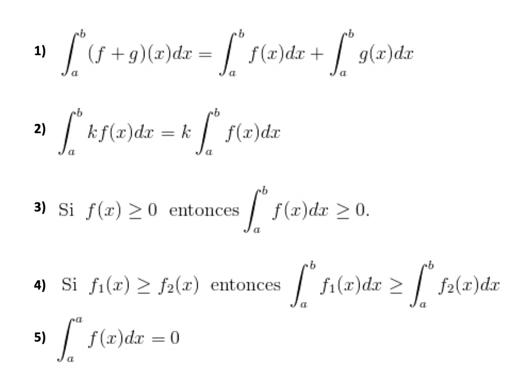
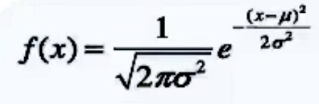

CONCEPTOS MATEMÁTICOS BÁSICOS
En el curso de Genética II asumimos que los alumnos ya poseen ciertos conocimientos de matemática básica indispensables para comprender los conceptos del curso. Este breve capítulo está diseñado para repasar dichos conceptos y nivelar la comprensión de los mismos.
FRACCIONES
FUNCIONES Y DESPEJES
SUMATORIA
INTEGRALES Y DERIVADAS
DISTIBUCIÓN NORMAL, DESVÍO, VARIANZA
- FRACCIONES
Una fracción es un cociente entre dos números enteros y esta representa un valor numérico. La misma consiste en un denominador (b) que indica el número de partes iguales en las que se ha dividido la unidad y un numerador (a) que indica el número de unidades fraccionarias elegidas. Como tal, la fracción expresa
un valor respecto a un todo y representa una división.
Las fracciones expresan la razón que guardan dos magnitudes proporcionales a la vez de actuar como operadores cuando son aplicadas a un número u otra fracción.
- Transformaciones
Fracciones equivalentes
Se dice que dos fracciones son equivalentes cuando a pesar de tener distinto numerador y denominador representan el mismo valor. Cada fracción posee infinitas fracciones equivalentes a ella y podemos obtener las mismas mediante dos métodos: amplificación y simplificación. La amplificación consiste en la multiplicación de numerador y denominador por un mismo número mientras que la simplificación consiste en la división de los factores por un número (esto se podrá lograr únicamente si ambos factores son divisibles por el mismo). Si el número entre el que estamos dividiendo los términos es el máximo común denominador obtendremos una fracción irreducible. Una fracción irreducible es aquella que no se puede simplificar y esto sucede cuando numerador y denominador son primos entre si.
Para comprobar si dos fracciones son equivalentes podemos utilizar el método de productos cruzados, es decir, multiplicar el numerador de una por el denominador de la otra y viceversa. Si ambos productos son iguales podemos decir que ambas fracciones son equivalentes.
Común denominador
Transformar varias fracciones a común denominador consiste en convertir cada una de ellas en otra fracción equivalente, pero teniendo el mismo denominador. A continuación, se presentan dos métodos para hallar el común denominador:
- Multiplicar los denominadores entre si
Para aplicar este método lo primero que se hará es multiplicar entre si los denominadores de las fracciones que queremos emplear. A continuación, será necesario modificar los numeradores para no modificar el valor de la fracción; para ello, dividiremos el denominador común encontrado entre cada uno de los denominadores de cada fracción inicial. Por último, el resultado de cada una de esas divisiones se multiplica por el numerador de cada fracción inicial.
Este método a pesar de ser práctico puede llevarnos a trabajar con números bastante grandes lo que puede complicar futuros cálculos.
- Mínimo común múltiplo (mcm)
Para aplicar este método lo primero que debemos hacer es descomponer cada denominador en factores primos.
A continuación, será necesario multiplicar todas las potencias producto de la descomposición, pero en caso de existir bases repetidas únicamente se utilizará la de mayor exponente.
Para modificar los numeradores aplicaremos el mismo proceso que en el método anterior
El mcm tiende a ser un método más laborioso que el primero, sin embargo, nos permite operar con valores más pequeños.
Saber aplicar todas las transformaciones detalladas en esta sección será fundamental al momento de operar con fracciones.
- Operaciones
Suma y resta
Solo se pueden sumar o restar fracciones que posean el mismo denominador. Una vez establecido esto, se procede a sumar o restar los numeradores manteniendo el denominador.
Multiplicación
El producto de fracciones es una fracción cuyo denominador es el resultado de la multiplicación de los denominadores y cuyo numerador es el producto de los numeradores.
División
La división de fracciones consiste en la multiplicación de la fracción que corresponde al dividendo por el inverso a la que corresponde al divisor; o lo que es lo mismo, es la multiplicación cruzada de numerador y denominador.
La multiplicación y división de fracciones poseen los mismos criterios que una multiplicación o división de enteros por lo que en la primera el orden de los factores no alterará el producto. Sin embargo, en la segunda, no se podrá cambiar que fracción es el dividendo y cual el divisor por lo que NO es indiferente que fracción se invierte.
Potencias
Las operaciones con potencias en fracciones poseen ciertos criterios, a saber:
Producto de potencias con la misma base
División de potencias con la misma base
Potencia de una potencia
Producto de potencias de un mismo exponente
Cociente de potencias con un mismo exponente
Prioridades en operaciones combinadas utilizando fracciones
Al momento de realizar operaciones combinadas, las prioridades a seguir son las mismas que cuando calculamos utilizando números enteros, así pues:
Calcular potencias y raíces
Realizar las operaciones entre paréntesis o llaves
Calcular los productos y cocientes
Calcular sumas y restas
- FUNCIONES Y DESPEJES
Podemos decir que las funciones constituyen una relación entre variables. Para definir esta relación diremos que dados dos conjuntos no vacíos denominados D y C (dominio y codominio respectivamente); entenderemos por función de D en C a toda regla que hace corresponder a cada elemento de D (criterio de existencia) con un único elemento (criterio de unicidad) en C.
D ⊆ R
Básicamente, tendremos tres formas de expresar una función: mediante una tabla de valores, una gráfica o una ecuación. Sin dudas para nuestro trabajo la manera más practica de expresar una función es mediante una ecuación debido a que no solo es sintética, sino que mediante ella podemos obtener las otras dos representaciones.
Para continuar esta idea, podemos tomar como ejemplo el cálculo del área de un círculo. Algebraicamente, podemos decir que \(A = \pi r^{2}\) lo que nos permite crear una tabla y un grafico que ilustren dicha relación:
| Radio | Área |
|---|---|
| 1 | \[\pi\] |
| 1,5 | 2,25\(\ \pi\) |
| 4 | 16\(\ \pi\) |
| 5,67 | 31,0249\(\ \pi\) |
| 7,1 | 50,41\(\ \pi\) |
Funciones potenciales
Funciones exponenciales
Funciones logarítmicas
Funciones polinómicas
Una función polinómica de grado n ∈ N ∪ {0} es una función del tipo
f(x) = a0 +a1x+a2x2 +···+anxn,
donde a0 , a1 , . . . , an ∈ R y se denominan coeficientes de la función polinómica. Una función polinómica tendrá como dominio a todo R.
- Polinomios de primer grado
Un polinomio de primer grado es una función de forma f(x)=ax + b donde su representación gráfica será siempre una recta.
- Polinomios de segundo grado
Un polinomio de segundo grado es una función de forma
f(x)=ax2 +bx+c donde a ≠ 0
Su representación gráfica será siempre una parábola cuyo vértice estará por debajo de la parábola si a>0 mientras que para a<0 se encontrará por encima de la misma. El vértice se situ ́a en el punto x = −b /2a.
Funciones racionales
Una función racional es una función del tipo
h(x) = f(x) / g(x)
en donde f y g son funciones polinómicas, por lo que podemos definir la función racional como el cociente de dos funciones polinómicas. El dominio de este tipo de funciones será R exceptuando los valores en los que g(x) es nula.
Límites
Despeje de funciones o ecuaciones
Frecuentemente nos encontraremos con situaciones en las que es necesario hallar un valor dentro una ecuación que no es el que fue planteado como incógnita al desarrollar la operación.
La regla básica para despejar es que los valores pasan al otro lado de la igualdad realizando la operación contraria a la que hacían en su forma original:
Suma y resta
Multiplicación y división
Potencia y raíz
Detallamos entonces como se realizan los despejes de operaciones particulares, sin embargo, es importante saber aplicar estos métodos en conjunto al momento de realizar un despeje en una ecuación. Veamos algunos ejemplos:
- SUMATORIA
La sumatoria se emplea para representar la suma de muchos o infinitos valores.
\[\begin{equation} \sum_{i=1}^{n} \end{equation}\]
Σ= sumatoria
i: límite inferior
n=limite superior
Pongo ejercicios? Desarrollo propiedades? Lo saco?
- DERIVADAS E INTEGRALES
Ya hemos determinado el concepto de función y sus diferentes tipos de representaciones, entre ellas, la gráfica. Entonces, profundizando en este análisis, podríamos pensar cuales serían los valores máximos y mínimos de una función dada o qué área queda delimitada bajo la misma. Delimitar el máximo o el mínimo no es otra cosa que determinar la tangente a una curva en un punto, es decir, derivar la función. Determinar el área bajo la curva de una función no es otra cosa que derivar la misma.
Derivada
Inicialmente, las funciones se estudian de manera estática, es decir, se evalúa que valor adquiere la misma en un punto. Sin embargo, también podemos estudiarlas de manera dinámica, es decir, con que rapidez se produce la variación en la función. Con este fin, la derivada de una función puede ser definida como la pendiente de una curva o como la razón instantánea de cambio. Teóricamente, la derivada de una función se estudia a través del cálculo de límites, este sin embargo es un método que reviste cierta complejidad por lo que se pueden aplicar reglas para derivar.
- Variación media
Mediante la variación media (VM) podemos estudiar la variación de un a función por unidad de tiempo dentro de un intervalo:

- Variación instantánea o derivada en un punto
Si disminuyéramos progresivamente el intervalo (a,b) hasta que practicamente ambos puntos se “junten,” obtenemos la variación instantánea mediante el uso de uns recta tangente a ese punto:
F´(a)= lím f(a+h) – f(a)
h->0 h
GRAFICA
- Reglas de derivación
Donde f(x) y g(x) son funciones, “a” y “b” son constantes

- Máximos y mínimos
Un punto máximo (a) puede ser encontrado si F(a) es mayor o igual a cualquier otro F(x) del intervalo de estudio. Es decir, que ese punto es el más alto de la gráfica de la función en un intervalo dado.
Un punto mínimo (a) puede ser encontrado si F(a) es menor o igual a cualquier otro F(x) del intervalo de estudio. Es decir, que ese punto es el más bajo de la gráfica de la función en un intervalo dado.
Para que exista un punto extremo, la derivada de la función debe ser cero en ese punto, es decir f(a)=0. O de lo contrario, que la derivada de la función no esté definida para a. La explicación a esto la podremos ilustrar de la siguiente manera:
En este caso, a la izquierda del punto, observamos como la pendiente es positiva y la gráfica va “creciendo” hasta llegar al máximo (pendiente 0; F´(x)=0). A partir de ese momento, la función comienza a decrecer.
Es importante saber que existen casos donde la pendiente es 0, pero que no exista un máximo ni un mínimo:
La otra posibilidad que manejamos para detectar un máximo o mínimo era que la derivada de la función no estuviera definida para ese punto:
- Criterio de la primera derivada
Para definir a un punto como máximo o mínimo nos basaremos en los puntos inmediatamente anteriores y posteriores al mismo. Dicho esto, para que un punto:
Sea máximo, los puntos adyacentes a el deben ser menores a la vez que la pendiente a la izquierda de este será positiva y a la derecha negativa.
Sea mínimo, los puntos adyacentes a el deben ser mayores a la vez que la pendiente a la izquierda de este será negativa y a la derecha positiva.
Establecido esto, el criterio de la primera derivada establece que: una vez que encontramos un punto donde la derivada es cero \[F´(x)=0\] y a su izquierda la derivada es positiva y a la derecha negativa, nos encontramos frente a un máximo. Si por su parte a la izquierda del punto la derivada es negativa y a la derecha positiva, estamos frente a un mínimo. En el caso que a ambos lados del punto la derivada sea positiva o negativa, no hay ni máximo ni mínimo.
Ilustremos un ejemplo trabajando con la primera derivada de la función F(x)=4x2-8x:
La derivada de la función es F´(x)=8x-8, por lo que la igualaremos a cero en busca de un punto extremo. Despejando, llegamos a que x=1, por lo que ya tenemos la primera coordenada del punto.
Para obtener el valor en y, sustituimos en la función original: F(1)=4(1)2-8(1)= -4.
Ahora ya tenemos la ubicación del punto extremo “a” (1,-4). Procederemos entonces a investigar la derivada de dos puntos, uno a la izquierda y otro a la derecha de “a” para determinar el signo de la pendiente a cada lado.
Comenzaremos tomando un punto a la izquierda, por ejemplo 0 y lo sustituimos en la derivada: F´(0)=8(0)-8= -8. Así definimos que a la izquierda del punto extremo “a” la derivada y con ella la pendiente de la función, es negativa.
A continuación, asignamos un valor a la derecha, por ejemplo 2 y nuevamente sustituimos en la derivada: F´(2)=8(2)-8= 8. Así definimos que a la derecha del punto extremo “a” la derivada y con ella la pendiente de la función, es positiva.
Una vez concluidos estos pasos y continuando con nuestro razonamiento inicial, podemos decir que el punto que encontramos es un mínimo. Gráficamente:

- Criterio de la segunda derivada
Existe una alternativa más sencilla al momento de determinar la presencia de máximos y mínimos y corresponde al método de la segunda derivada. El criterio es el siguiente, si una función posee una segunda derivada y esta es positiva, estamos en presencia de un mínimo, si es negativa, de un máximo.
Retomemos el primer ejemplo: F(x)= 4x2-8x
F´(x)= 8x-8
F´´(x)= 8
De acuerdo con el criterio que planteamos y confirmamos con el método de la primera derivada estamos frente a un mínimo. Para determinar la ubicación del punto “a” donde se encuentra ese mínimo utilizaremos el mismo procedimiento que anteriormente donde igualamos la primera derivada a cero y posteriormente sustituimos con ese valor la ecuación original para obtener las coordenadas.
Utilicemos un ejemplo más complejo donde: F(x)= x3-6x2
F´(x)= 3x2-12x
F´´(x)= 6x-12
Podemos ver en este caso que el signo de la segunda derivada no es evidente. Por ello, procederemos a igualar a cero la primera derivada para obtener la coordenada en x de los puntos extremos; así obtenemos que la función tiene dos puntos extremos, uno donde x=0 y otro donde x=4. A continuación buscaremos la ordenada de cada uno de esos puntos:
Para x1: F(0)= (0)3-6(0)2= 0
Para x2: F(4)= (4)3-6(4)2= -32
Tenemos entonces las coordenadas de dos puntos extremos “a” (0,0) y “b” (4,-32). Como ultimo paso entonces nos queda determinar si los puntos representan un máximo o un mínimo, para ello, sustituiremos en valor de x en la segunda derivada y obtendremos así el signo de la misma para cada punto.
Para a: F´´(0)= 6(0)-12= -12 (el punto es un máximo)
Para b: F´´(4)= 6(4)-12= 12 (el punto es un mínimo)

Integral
El calculo integral puede ser utilizado fundamentalmente para dos fines: el primero consiste en la obtención de la función original a partir de su derivada (integral indefinida) o bien obtener el área comprendida bajo una curva (integral definida).
- Integral indefinida
La notación de integral indefinida para cualquier función es:
\[\int_{}^{}{F´(x)\text{\ dx}} = F(x) + k\]
Donde: \(\int_{}^{}\text{es\ el\ simbolo\ de\ la\ integral}\)
F´(x) es una derivada de F(x)
dx (diferencial de x), indica la variable en relación a la que estamos integrando
k es la constante de integración
Reglas de derivación inmediata

Podremos llegar a determinar el valor k, si tenemos algo mas de información de la función primitiva, por ejemplo…
- Integral definida
La integral definida es un número real que implica una suma infinita de valores y representa el área comprendida entre la función y el eje de las abscisas.
\[\int_{a}^{b}{F(x)\text{dx}}\]
Donde: \(\int_{}^{}\text{es\ el\ simbolo\ de\ la\ integral}\)
F(x) es la función a integrar
dx (diferencial de x), indica la variable en relación a la que estamos integrando
a, b son los límites de integración
a b
Es importante tener en cuenta que es necesario estudiar si la función es positiva, pues en caso de no serlo en todo intervalo, será necesario calcular una integral separada por intervalos según el signo y tomar su valor absoluto.
Propiedades:

Pasos a seguir para obtener la integral definida:
Determinar el valor de la integral indefinida
Sustituír en ella los valores limites (a y b)
Restar ambos valores para obtener el área
EJEMPLO
- DISTIBUCIÓN NORMAL, DESVÍO, VARIANZA
Una distribución indica el patrón de ordenamiento que tienden a seguir una serie de datos. La distribución normal se presenta con forma de campana simétrica y está caracterizada por una media (µ) y un desvío estándar ().
En este tipo de distribución, aproximadamente el 68% de los datos quedan comprendidos entre +/- 1 desvío estándar.


 Varias distribuciones normales con
diferentes medias y varianzas ()
Varias distribuciones normales con
diferentes medias y varianzas ()
Como vemos, las campanas roja, verde y azul tienen igual media (0), pero difieren en su varianza lo que afecta cuan “achatada” puede presentarse la gráfica. Consecuencia de esto, y a modo de ejemplo, podemos ver que el valor 3 es probable si estuviéramos dentro de la campana azul pero sería improbable si estuviéramos trabajando dentro de la campana roja.
Media
Es el promedio aritmético de todos los valores pertenecientes a determinada muestra o población. Sin embargo, como pudimos comprobar mediante la observación del gráfico anterior, la media no es informativa sobre la variación en la distribución de los datos.
Variación
Desvío de un registro: es la diferencia numérica existente entre un registro particular y la media poblacional
Desvío estándar (): Gráficamente, es la distancia entre la media y el punto de inflexión de la curva de distribución normal. Es una medida de dispersión de los datos, podemos llegar a conceptualizarla como un “desvío promedio de la media” aunque matemáticamente no es así. Es la raíz cuadrada de la varianza.
Varianza (): medida de dispersión al igual que es desvío estándar, es una propiedad muy informativa pero difícil de conceptualizar.